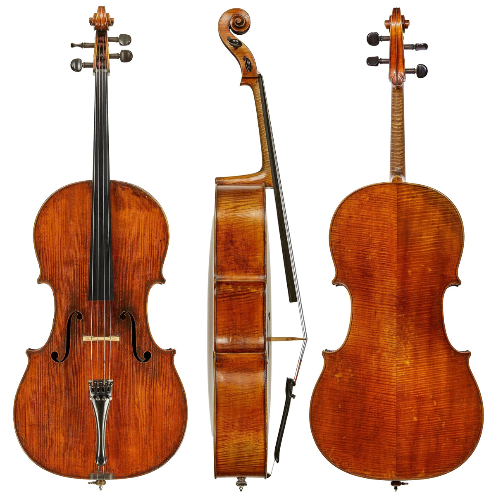

吹管乐器
1. 笛子
笛子又名横吹、横笛。
相传汉武帝时，张骞出使西域以后输入长安。宋朝以后，成为伴奏戏曲的重要乐器。
传统的笛子，竹制，有六个按音孔、 一个吹孔和一个膜孔。吹奏时，由竹管内空气柱的振动而发音。其常用音域有两个八度，笛音清脆、高亢、透明而圆润，独奏、合奏均具特色，表现力丰富，故深受人们喜爱。
笛子种类很多，最常见的是筒音(最低音)为a′(实际音)的曲笛，和d2(实际音)的梆笛。
2. 笙
古时大笙称为『竽』，小笙称为『和』。
西元前十五世纪殷代甲骨文上已有关於『和』的记载。西元前六世纪，中国的诗集经中也常提到这种乐器。
传统笙一般为十三簧与十四簧，经过改良后有二十一、二十四、二十六、三十二、三十四、三十六簧等多种。笙常用作伴奏乐器，由於它音色清晰透亮，音域宽广，亦可用於独奏。
笙是以簧片振动发音，吹吸皆可演奏，且同时可吹出两音以上，故可吹奏和声。
高音笙
中音笙
 低音笙
低音笙
3. 唢呐
原是波斯（今伊朗），阿拉伯的乐器。唢呐两字为波斯语SURNA的音译。
自明代始有关於唢呐的记载。至今在民间婚丧喜庆以及民俗节日中，它是主奏乐器。
流传各地的唢呐种类甚多，表现力很强。所有管乐器的技巧几乎都可演奏，它还可以模仿唱腔，以管体、哨子、喇叭口拆开吹奏，各自模拟不同角色，如老生、花旦等。
其常用音域为两个八度，目前在国乐团中常用的唢呐是筒音为g′的D调高音唢呐。
高音唢呐
中音唢呐
低音唢呐
弹拨乐器
1. 琵琶
琵琶已经有二千多年的历史。“琵琶”这个名称来自所谓“推手為枇，引手为杷”（最基本的弹拨技巧）所以名為枇杷(琵琶)。
在唐朝以前，琵琶也是所有弹拨乐器的总称。最早的琵琶大约在秦朝时期發明的。但古琵琶的形制跟現代琵琶不同，最主要的差別在于古代琵琶是圆形的，不同于现代梨形的琵琶。南北朝時竹林七贤中的阮咸善於演奏琵琶，所以後世称这种乐器為阮咸，或是秦汉琵琶。

2. 柳琴
柳琴又名柳叶琴、柳月琴、土琵琶、金刚腿。流行于山东、江苏、安徽三省交界处，是苏北、鲁南一带柳琴戏、安徽泗州戏和绍兴乱弹的主要伴奏乐器。
柳琴外形像琵琶，但略小。传统形制为双弦7品，音域1个半八度，右手中指戴一竹筒或牛角筒义甲拨弦。改革后的柳琴有3弦、4弦两种，音品增至24个和29个，按十二平均律半音排列，改用拨子弹奏。
柳琴也用于器乐合奏，如常州丝弦。
3. 扬琴
扬琴音色清脆、明亮，表现力极为丰富。
擅长独奏，代表曲目《海燕》、《阳光照耀着塔什库尔干》显示了扬琴华丽炫目的技巧。 在民间器乐合奏和民族乐队中占有重要地位，是乐队中的指挥。
4. 阮
是”阮咸”的简称。弹拨乐器。古琵琶的一种。
现在使用的改良阮分为四种：低阮、大阮、中阮、小阮。三弦或四弦，有品，按十二平均律装置。音域可达两组半。 阮的演奏技巧不是很复杂，演奏方法及符号与琵琶相同。右手指法有弹、挑、双弹、双挑、分、滚、划等；左手只按音。
小阮主要用于演奏旋律；中阮、大阮、低阮主要担任和声伴奏。四种阮的音色圆润而丰厚，颇具特色，并且自成一族。在乐队中可起强有力的作用。目前民族管弦乐队中主要使用大阮和中阮。

5. 古筝
是中国传统民族乐器宝库中最古老的乐器之一，史称秦筝，形成流传于秦地，盛行于隋唐。至今，古筝已有两千五百多年的历史了。
古筝的模样端庄雅致，声音清丽柔和，它可以变幻出风姿多彩的各种形象，时而优美抒情，时而气势磅礴，时而委婉清雅，时而深邃悠扬。民乐界素有“金筝、银胡、铜琵琶”之说，古筝可谓当之无愧。
古筝按传统五声音阶定弦，极具中国民族特色。音色方面：低音区低沉浑厚，高音区清越剔透，中音区则圆润明亮。；当其刮奏时犹如流水淙淙，独具魅力，而左手的按、揉、吟等技法，又使古筝更具幽雅韵味。
古筝无论用于独奏、重奏、合奏或伴奏作品中，都是特色型乐器。
拉弦乐器
1. 二胡
二胡为中国流传最广，最有代表性的一种擦弦乐器，广泛地流传在长城内外，大江南北，以至珠江流域。
在南方，“二胡”是专指独奏用或在国乐队用的一种，北方人称为「南胡」。由於全国各地不同的习惯，也有称为「二弦」、「嗡子」和「胡胡」的。
二胡音色优美，表现力强，既能演奏柔和流畅的曲调，也能演奏跳跃有力的旋律乐器，既用之於独奏，也适於合奏或伴奏，在民间的戏曲的多种剧种中均为中要的伴奏乐器。
二胡普遍采用五度定弦法，最常用的空弦定音为d′a′。
2. 中胡
中胡是在二胡基础上改制的一种乐器，故又称为”中音二胡”。
所有二胡上的演奏技巧都适宜中胡演奏。它仍属于灵敏性较强的乐器。
它最善于演奏一些抒展、辽阔的歌唱性旋律，和声长音与不很复杂的音型，较少演奏快速的华彩性旋律。

3. 高胡
高胡是高音拉弦乐器，其形、构造、演奏弓法与技巧以及所用演奏符号等，均与二胡相同，只是琴筒）比二胡略小，常用两腿夹着琴筒的一部分演奏。
在常用音域范围，其音色明朗、清澈，适宜演奏优美、抒情以及秀丽、活泼的曲调，并经常与二胡构成八度奏。
高胡是”高音二胡”的统称，是在二胡的基础上改制而成的。音色清脆高亢，犹如女高音，加上低音区圆润的特色，使它在乐队中占有非常突出的地位。
另外，由于高胡有着特别丰富的表现力，适于演奏抒情、活泼和华丽的旋律。它在乐队中经常以华彩的方式给乐曲的主旋律做伴奏，并且能把主旋律按照情感的需要加以装饰。
4. 大提琴
大提琴（cello）是管弦乐队中必不可少的次中音或低音弦乐器。
在管弦乐曲中大提琴声部经常演奏旋律性很强的乐句，也与低音提琴共同担负和声的低音。

5. 倍大提琴
倍大提琴（double bass）提琴家族中最低音也是最大的乐器，全长约200公分，演奏者必须站立拉奏。音色庄重而低沈。
演奏技术由於受到乐器构造的限制比其它弓弦乐器显得较不灵活。
用於独奏略显单调，但一加入合奏中，则使整个合奏发出充实的音响与立体的效果，因而成为管弦乐、室内乐、爵士乐等所有合奏种类的基础。
敲击乐器
华乐乐器中，打击乐器历史最悠久，且占有重要的地位。在传统上，分为鼓、锣、钹、板和钟五类。它们的演奏技能和表现力极为丰富，音响具有特色，不仅使乐器的节奏鲜明强烈，且具有极深刻的感染力，尤其具有浓厚的民族色彩。民间音乐俱是以打击乐器见长。
1. 鼓类乐器
• 大鼓
也叫大堂鼓，为较大型的鼓，一般鼓面直径在一尺半以上。由木制的圆桶上下端蒙以两块面积相等的牛皮而成。一般摆在四脚的木架上演奏，奏时用两根木槌敲击鼓面而发音。音色低沉而厚实。
• 定音鼓
可定音的大鼓，根据缸鼓〈花盆鼓〉改良而成。乐队中经常以两个或三个为一组，两个一组的多定为主音及属音，三个一组的则增加下属音、上属音或下中音等其他音。
2. 锣类乐器
• 云锣
有固定音高的打击乐器，民间叫九音锣。通用的云锣有十面小锣，悬于木框之间，或将木框抵在桌上，右手用小槌敲击之，其立位排列各不相同。
3. 板类乐器
• 梆子
最早用於伴奏各种梆子腔而得名，常使用在强拍上，藉以增加戏剧气氛。因适用范围不同，而有河北梆子、南梆子、坠梆子及秦梆子等区别。河北梆子，是两根长短不等，粗细不同的实心硬木棒以紫檀或红木制成。左手执短而粗的椭圆形，右手执长而细的圆形木棒，互击发音，音色高亢而坚实。南梆子为长方形的中空木制体，演奏时左手执梆，右手执木槌敲击,发音圆润，一般以花梨木制造。坠梆子用於豫剧伴奏，其形如蛋。